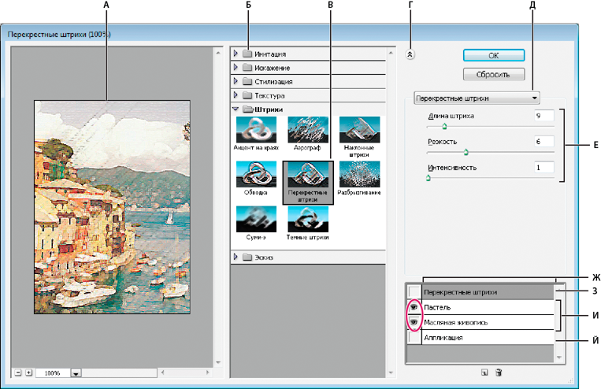

Основные сведения о фильтрах
Применение фильтров
Фильтры используются для очистки и ретуширования фотографий, применения специальных художественных эффектов, которые придают изображению вид наброска или картины в импрессионистском стиле, а также специфических трансформаций с использованием эффектов искажения и освещения. Все фильтры, предлагаемые Adobe, содержатся в меню «Фильтр». Некоторые фильтры, поставляемые сторонними разработчиками, доступны в виде внешних модулей. После установки они отображаются в нижней части меню «Фильтр».
Смарт-фильтры, применяемые к смарт-объектам, позволяют выполнять операции недеструктивным образом. Они сохраняются на панели «Слои» в виде слоевых эффектов и в любое время могут быть перенастроены, поскольку применяются к исходным данным изображения, хранящимся в смарт-объекте. Чтобы получить дополнительную информацию об эффектах смарт-фильтров и обратимом редактировании.
Чтобы применить фильтр, выберите соответствующую команду в меню «Фильтр». В использовании фильтров могут помочь следующие рекомендации:
«Пластика», «Перспектива», «Усредненное размытие», «Размытие», «Размытие+», «Размытие по рамке», «Размытие по Гауссу», «Размытие при малой глубине резкости», «Размытие в движении», «Радиальное размытие», «Размытие по поверхности», «Размытие по фигуре», «Коррекция дисторсии», «Добавить шум», «Ретушь», «Пыль и царапины», «Медиана», «Уменьшить шум», «Волокна», «Затемнение», «Разностное затемнение», «Блики», «Резкость», «Резкость на краях», «Резкость+», «Умная резкость», «Контурная резкость», «Тиснение», «Выделение краев», «Соляризация», «Устранение чересстрочной развертки», «Цвета NTSC», «Пользовательский», «Цветовой контраст», «Максимум», «Минимум» и «Смещение».
Применение фильтра из меню «Фильтр»
Фильтр может применяться к активному слою или к смарт-объекту. Фильтры, применяемые к смарт-объекту, являются обратимыми и могут быть в любой момент перенастроены.
- Выполните одно из следующих действий.
- Выберите фильтр в меню «Фильтр». Если при этом не появилось диалоговое окно, то это означает, что эффект фильтра уже применен.
- Если же появляется диалоговое окно или раскрывается галерея фильтров, введите требуемые значения или выберите нужные параметры, а затем нажмите кнопку «ОК».
Применение фильтров к большим изображениям может занять много времени. Просмотреть результат можно в диалоговом окне фильтра. Перетащите окно просмотра на интересующую вас область изображения. Некоторые фильтры позволяют щелкнуть на изображении, чтобы отобразить в окне просмотра точку щелчка. Кнопки «+» и «-» в нижней части окна просмотра позволяют увеличить или уменьшить изображение.
Обзор галереи фильтров
Галерея фильтров обеспечивает предварительный просмотр для многих фильтров специальных эффектов. Она позволяет применять несколько фильтров, включать или выключать их эффект, сбрасывать параметры и изменять порядок их применения. Добившись удовлетворительных результатов, можно применить фильтр к изображению. В диалоговом окне «Галерея фильтров» доступны не все фильтры, имеющиеся в меню «Фильтр».

Диалоговое окно «Галерея фильтров»
А. Просмотр
Б. Категория фильтра
В. Миниатюра выбранного фильтра
Г. «Показать/Скрыть» миниатюры фильтра
Д. Всплывающее меню «Фильтры»
Е. Параметры для выбранного фильтра
Ж. Список эффектов фильтра, доступных для применения или упорядочивания
З. Эффект фильтра выбран, но не применен
И. Результат применения фильтров принят кумулятивно, но не выбран
К. Скрытый эффект фильтра
Открытие диалогового окна «Галерея фильтров»
Увеличение или уменьшение масштаба просмотра
Отображение другой области просмотра
Скрытие миниатюр фильтра
Применение фильтров из галереи
Эффекты фильтров применяются в том порядке, в каком они выбраны. Можно переупорядочить фильтры после их применения, перетаскивая их имена в списке примененных фильтров. В результате переупорядочения эффектов фильтров вид изображения может кардинально измениться. Щелкните находящийся рядом с фильтром значок , на котором нарисован глаз, чтобы скрыть эффект этого фильтра в просматриваемом изображении. Применяемые фильтры можно также удалять, выбрав фильтр и щелкнув значок «Удалить слой» .
Чтобы при опробовании различных фильтров сэкономить время, проводите эксперименты, выбрав маленькую, но представительную часть изображения.
- Выполните одно из следующих действий.
- Выберите пункт «Фильтр» > «Галерея фильтров».
- Чтобы добавить первый фильтр, щелкните его имя. Чтобы увидеть полный список фильтров, может потребоваться щелкнуть перевернутый треугольник рядом с категорией. После добавления фильтр отображается в списке применяемых фильтров в нижнем правом углу диалогового окна «Галерея фильтров».
- Введите значения или выберите параметры для выбранного фильтра.
- Выполните одно из следующих действий.
- Получив удовлетворительные результаты, нажмите кнопку «ОК».
Смешивание и ослабление эффектов фильтра
Команда «Ослабить» позволяет изменить непрозрачность и режим наложения любого фильтра, инструмента рисования, стирания и цветовой коррекции. Режимы наложения команды «Ослабить» представляют собой подмножество соответствующих режимов, задаваемых в параметрах инструментов рисования и редактирования (кроме режимов «Подложка» и «Очистить»). Применение команды «Ослабить» аналогично применению эффекта фильтра к отдельному слою с последующим применением средств управления непрозрачностью слоя и режимом наложения.
Примечание. Команда «Ослабить» позволяет также видоизменить эффекты применения команды «Пластика» и фильтра «Мазки кистью».
- Примените фильтр, инструмент рисования или коррекцию цвета к изображению или выделению.
- Выберите пункт «Редактировать» > «Ослабить». Выберите параметр «Просмотр» для предварительного просмотра эффекта.
- При помощи ползунка измените непрозрачность от 0 % (полная прозрачность) до 100 %.
- Выберите режим смешения в меню «Режим». Примечание. Режимы наложения «Осветление основы», «Затемнение основы», «Замена светлым», «Замена темным», «Разница» и «Исключение» к Lab-изображениям не применяются.
- Нажмите кнопку «ОК».
Советы по созданию специальных эффектов
Создание эффектов краев
Обработка краев части изображения, к которой применен эффект, производится различными методами. Чтобы оставить края резкими, просто примените фильтр. Для создания более мягких краев растушуйте их перед применением фильтра. Для создания эффекта прозрачности примените фильтр, а затем воспользуйтесь командой «Ослабить», откорректировав режим наложения и непрозрачность для выделенной области.
Применение фильтров к слоям
Предусмотрена возможность применять фильтры как последовательно к отдельным слоям, так и к нескольким слоям одновременно, комбинируя создаваемые ими эффекты. Чтобы применить фильтр к слою, этот слой должен быть видимым и содержать пикселы (например, нейтральный цвет заливки).
Применение фильтров к отдельным каналам
Предусмотрена возможность применять фильтр к отдельному каналу, применять к каждому цветному каналу свой эффект, а также применять один и тот же фильтр с разными значениями параметров.
Создание фона
Применение эффектов к формам в сплошном тоне или в градациях серого позволяет создать множество фоновых изображений и текстур. После этого к ним можно применить эффект размытия. При применении к сплошному тону эффект одних фильтров незначителен или незаметен (в качестве примера можно указать фильтр «Стекло»), но другие производят интересные эффекты.
Объединение нескольких эффектов при помощи масок или дублирующихся изображений
Применение масок для создания областей выделения позволяет лучше управлять переходом от одного эффекта к другому. Например, к выделению, созданному с помощью маски, можно применить фильтр.
Кроме того, можно воспользоваться инструментом «Архивная кисть», чтобы распространить эффект фильтра только на часть изображения. Сначала примените фильтр ко всему изображению. Затем перед применением фильтра перейдите на панели «История» к состоянию изображения до применения фильтра и установите связь между источником архивной кисти и фильтруемым состоянием. Для этого щелкните мышью на холсте в левой части архивного состояния. После этого обработайте изображение кистью.
Повышение качества и целостности изображения
Эффекты позволяют маскировать ошибки, изменять и ретушировать изображения, а также объединить их в группу, применив к каждому из них один и тот же эффект. Запишите на панели «Операции» шаги, которые были предприняты для обработки одного изображения, а затем примените эти операции к остальным.
Повышение производительности фильтра
Для применения некоторых эффектов фильтров может потребоваться большой объем памяти, особенно если они применяются к изображению с высоким разрешением.
В целях повышения производительности можно выполнить любое из следующих действий: